kansas mesonet wind map
5 mph
10 mph
15 mph
20 mph
25 mph
30 mph

Created by Alex Neises.
All data is approximate, and interpolated using
Kansas Mesonet
data.
Wind map created in part with existing javascript at
hint.fm/wind
.